EPR操作
实验前准备物品:
- 01.实验样品
- 02.自带工具
- 试样杆
- 镊子(平头镊子, 塑料镊子)
- 剪刀
- 双面胶
- 酒精
- 无尘纸
- 吹球
- 手套
EPR操作方法
01.检查:冷却水,温度20℃以下;
02.电源:
- 02.01.直流磁场电源(标签4), 打开;
- 02.02.微波电源(标签3), 打开;
- 02.03.微波开关机开关(标签2), 打开;
- 02.04.直流磁场开关机开关(标签1), 不开; imp->此时不开
03.制样:
- 03.01.酒精清洗样品杆;
- 03.02.样品杆粘双面胶; imp->确保样品无毛刺
- 03.03.样品杆粘样品;
- 03.04.样品杆放紧固夹;
- 03.05.放样,避免与腔体接触; imp->放样时,样品尽量位于高位(靠近测试腔口)
- 普通紧固夹:
- (01)样品尽量位于高位(靠近测试腔口)
- (02)放样时手握样品杆根部
- 转角紧固夹:
- (01)选择“最长支撑杆”;
- (02)保证“支撑杆”与“转角盘”稳定;
- (03)样品杆“固定”在转角盘上;
- (04)样品尽量位于高位(靠近转角盘);
04.电脑开机:
- 04.01.刷卡上机;
- 04.02.电脑主机开关;
- user: user@xepr
- admin: xepr@linux
- 04.03.创建文件路径;
- path: 桌面/Home/DATA/ZhangTianJin/<xxx>
- 04.04.打开软件, 等待进入软件;
05.imp->直流磁场开关机开关, 打开; -> 样品杆下降至测试腔中央;
06.电脑操作:
- 面板位置说明
- Save to Disk面板, 位于整个窗口左侧;
- Store in Memory面板, 位于整个窗口左侧;
- Switch to Processing Mode面板, 位于整个窗口左侧;
- Field Sweep面板, 位于整个窗口左侧;
- Options面板, 位于整个窗口左侧;
- Control Panel for Spectrometer on localhost面板, 位于整个窗口下侧;
- Microwave Bridge Tuning面板, 位于整个窗口右侧;
- 通过点击下面版Stand by左上方的小方块打开
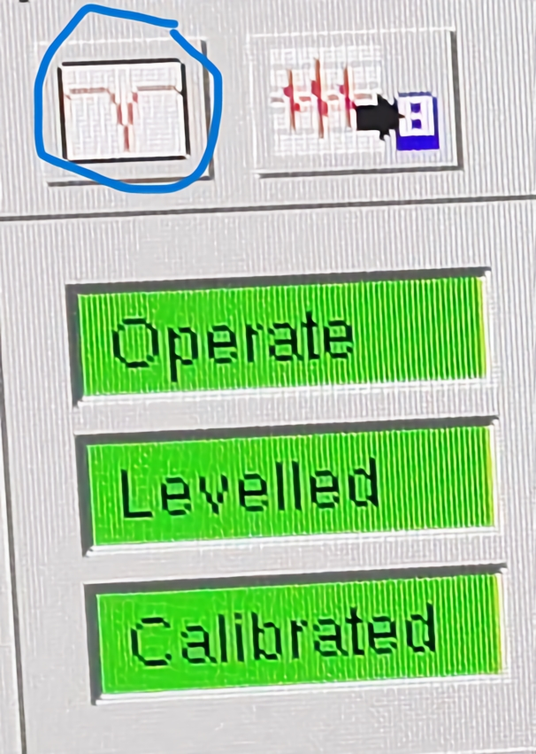
- 06.01.导入测试参数;
- (01)打开旧测试文件: File->open->Home/DATA/ZhangTianJin/<xxx>
- (02)点击:Copy spectrum parameters to hardware;
- 通过点击下面版Stand by右上方的小方块打开
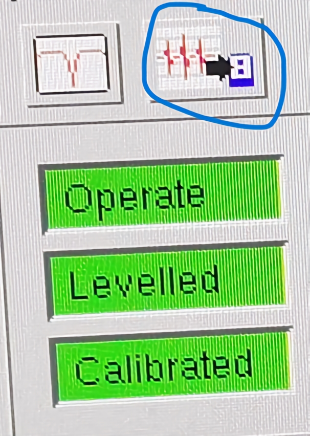
- 06.02.检查测试参数: Field Sweep面板
- Center Field [G]: 中心磁场值
- Sweep Width [G]: 扫描磁场宽度
- Mode: 采样模式, 一般选为Manual模式
- 06.03.调试仪器参数;
- (01)自动协调: Microwave Bridge Tunning面板
- Phase栏: 点击Tune, 等待中心峰稳定;
- Auto Tuning栏: 点击up, 等待中心峰稳定;
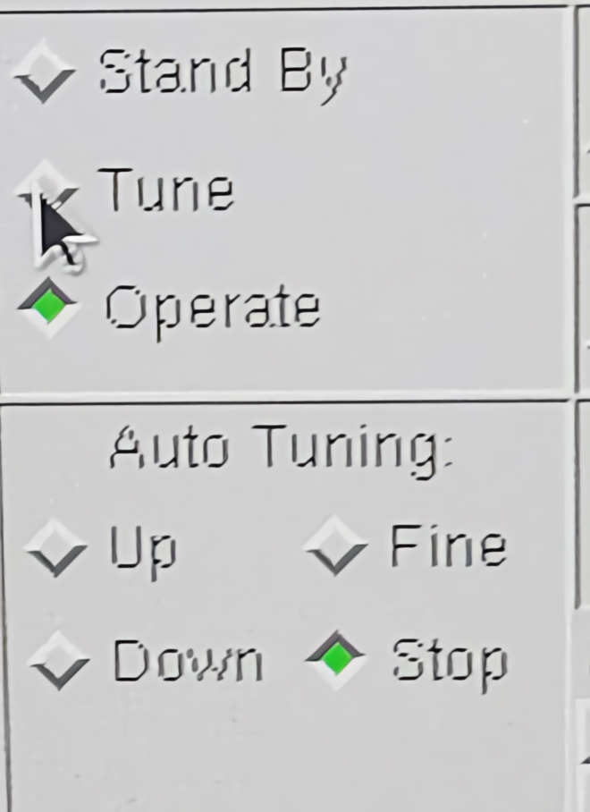
- (02)手动操作: "Microwave Bridge Tunning"面板
- Iris:调节"Diode Current"(整个窗口下方右侧表盘), 示数[190,210uA], 最好为200uA;
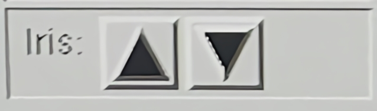
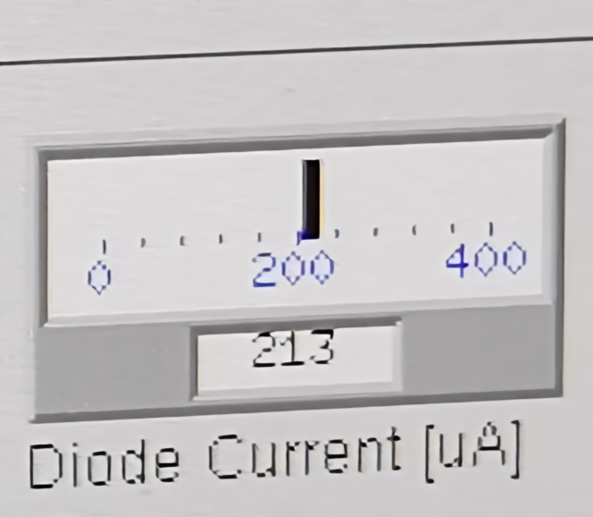
- Frequency:调节"Lock Offset"(整个窗口下方右侧表盘), 示数[-10,10%], 最好为0%;
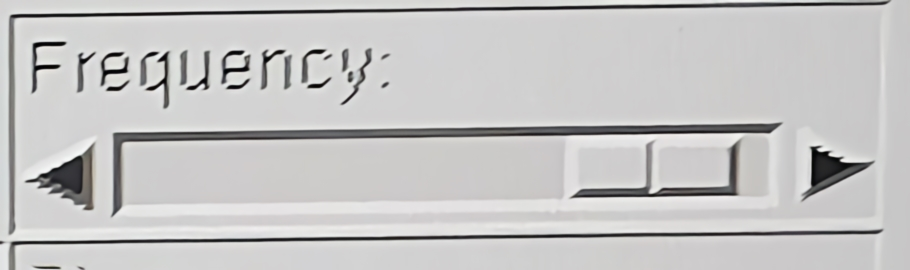
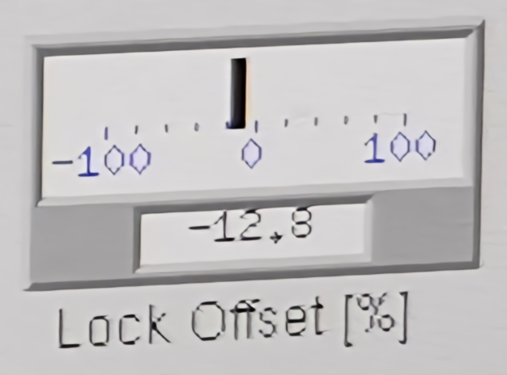
- 06.04.imp->检查参数:
- (01)"Field Sweep"面板:
- Receiver Gain[dB]: 示数[30,60dB], 一般为30dB;
- Attenuation[dB]: 示数[30,60dB], 一般为30dB;
- Mod. Amp. [G]: 磁场积分强度, 示数[1,6G];
- Mode: 采样模式, 一般选为Manual模式;
- (02)"Microwave Bridge Tuning"面板:
- 确保"Attenuation[dB]"示数[30,60dB], 一般为30dB;
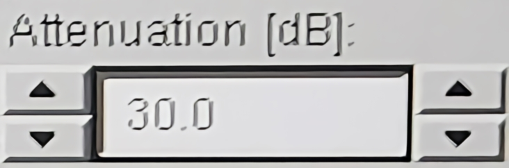
- (03)"Control Panel for Spectrometer on localhost"面板:
- 确保"Operate"为绿色;
- 确保"Levelled"为绿色;
- 确保"Calibrated"为绿色;
- 确保"Field[G]"为绿色;
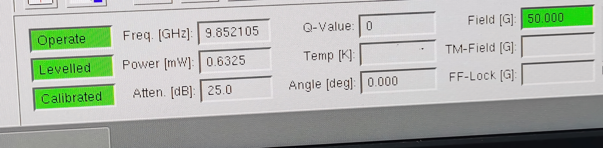
- 06.05.点击"Run"扫描
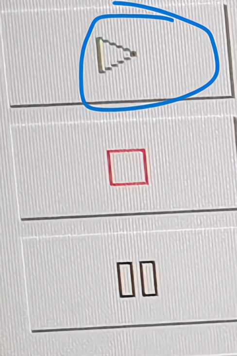
- 06.06.数据保存:
- (01)Save to Disk面板, 确保文件名上下一致, 等待扫描线变红色;
- (02)菜单栏:File->export to ASCII;
07.取样,扫空腔:
- 07.01."Microwave Bridge Tuning"面板:
- (01)由Operate-> 点击Tune,等待10s ->点击Stand By,等待1min;
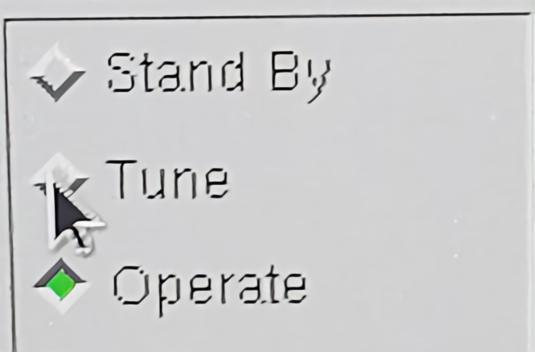
- (02)等待面板中"Frequency", "Bias", "Signal Phase"选项全为灰色;
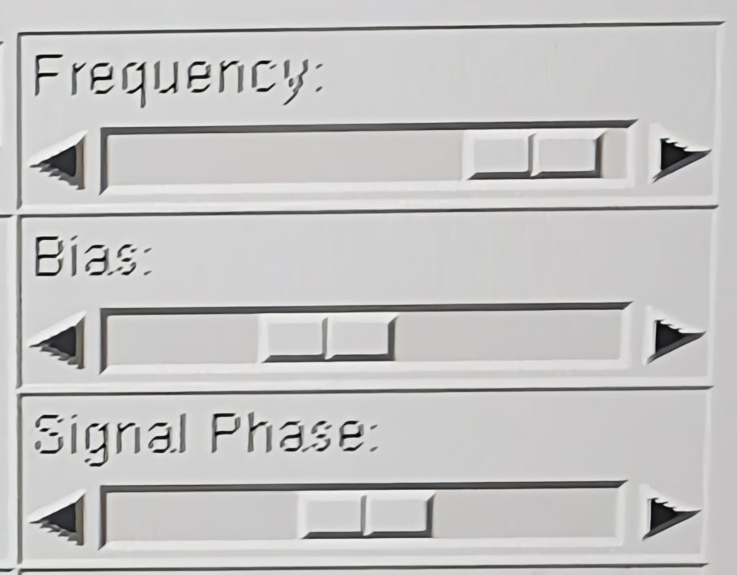
- 07.02.取样, 盖盖子
- 07.03.扫描空腔:"Microwave Bridge Tuning"面板
- (01)点击Tune, 等待中心峰稳定;
- (02)点击up, 等待中心峰稳定;
- (03)检查参数"Attenuation[dB]"示数[30,60dB],一般为30dB;
- (04)确保下端窗口全为绿色;
- (05)扫描;
- 07.04.保存数据
08.关机
- 08.01.Microwave Bridge Tuning面板:
- (01)由Operate-> 点击Tune,等待10s ->点击Stand By,等待1min;
- (02)等待面板中"Frequency", "Bias", "Signal Phase"选项全为灰色;
- 08.02.关闭"直流磁场开关机开关(标签1)", 观察电流示数[0,0.09A];
- 08.03.关闭软件, 等待软件关闭;
- 08.04.电脑关机(系统关机);
- 08.05.关"微波开关机开关(标签2)"
- 08.06.关"微波电源(标签3)"
- 08.07.关"直流磁场电源(标签4)"
09.收拾桌面,打扫地面,断水断电(电灯),关门;
流程图